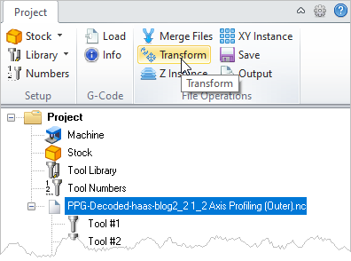
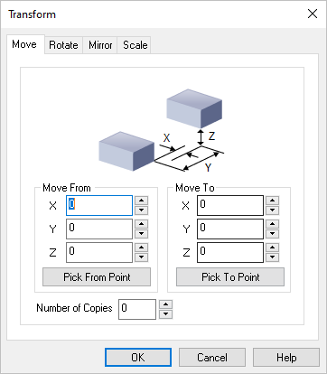
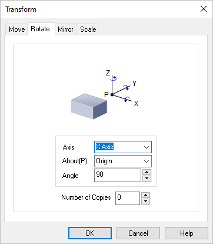
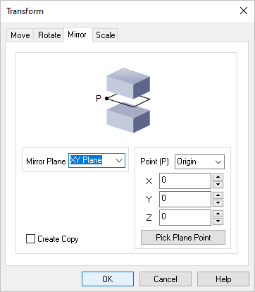
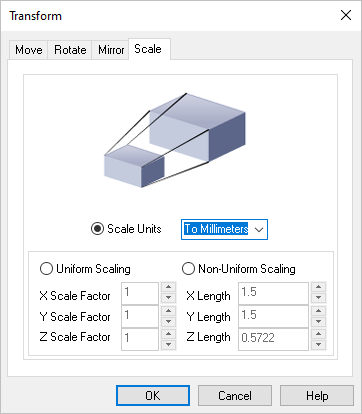

You can use this command to perform transformations on a selected g-code file. The transformations include Move, Rotate, Mirror and Scale. Each method is documented in the topics below. Each tab of the Transform dialog below includes an example.
|
 G-Code Browser: Transform menu item |
1.Select the g-code file from the Project tab that you wish to transform. 2.Select Transform from the Project tab menu. The Transform dialog will display. 3.Select the type of transformation to make by selecting the corresponding tap at the top of the dialog (Move, Rotate, Mirror or Scale). 4.Complete the necessary data fields and then pick OK from the dialog to perform the transformation. 5.The transformation is displayed in the graphics screen and the g-code file is flagged for Output. |
The Move tab of the Transform Toolpath dialog allows you to translate the toolpath by specifying From and To points for the move. You can either specify these points by coordinate entry in the corresponding edit fields or could graphically pick the points by selecting the Pick buttons. Once the points are specified, selecting the apply button will perform the move operation.  Dialog Box: Transform Toolpath, Move tab Move From Enter the X,Y,Z coordinate values for the Move From point or select the Pick From Part button to select a point from the model. Move To Enter the X,Y,Z coordinate values for the Move To point or select the Pick To Part button to select a point from the model. Number of Copies You can also Copy the toolpath by entering the number of copies. Example: The original g-code file is moved along the Y axis making 3 copies.
|
Selecting the Rotate tab allows you to rotate the toolpath.  Dialog Box: Transform Toolpath, Rotate tab Axis / About(P) / Angle Rotation can be performed around any of the three principal axes. The angle of rotation as well as the point and Axis of rotation can be specified. The point of rotation could be one of the Origin, Center of the part, Minimum point of the part and the Maximum point of the part. The Axis of rotation could be the X, Y or the Z Axis. You can specify any arbitrary rotation Angle. Number of Copies You can also Copy the toolpath by entering the number of copies. Example: The original g-code file is rotated about the Z axis by 45 degrees.
|
Selecting the Mirror tab allows you to Mirror the selected toolpath.  Dialog Box: Transform Toolpath, Mirror tab Mirror Plane Select the Mirror Plane from the list (XY Plane, XZ Plane or YZ Plane). Point (P) Select a Mirror Point (P) from the list (Origin, Center of the part, Minimum point of the part) or enter the X,Y,Z coordinate values of the desired point. You can also select the Pick Plane Point button to select a point from the model. Create Copy Check this box to create a Copy of the mirrored toolpath. Example: The original g-code file is mirrored about the YZ plane keeping the original.
|
Selecting the Scale tab allows you to scale the selected toolpath. All scaling is performed about the zero of the coordinate axes. You can optionally scale from a mm to an inch or vice-versa or by specifying a scale factor. You can also scale the selections uniformly or perform non-uniform scaling in each of the three principal axes.  Dialog Box: Transform Toolpath, Scale tab Scale Units Select the Scale Units from the list (To Millimeters or To Inches). Uniform Scaling Select this option and then enter the uniform X,Y and Z scale factors. Non-Uniform Scaling Select this option and then enter the actual non-uniform X,Y and Z length values. Example: The original g-code file is scaled by 1.5 times the size of the original.
|